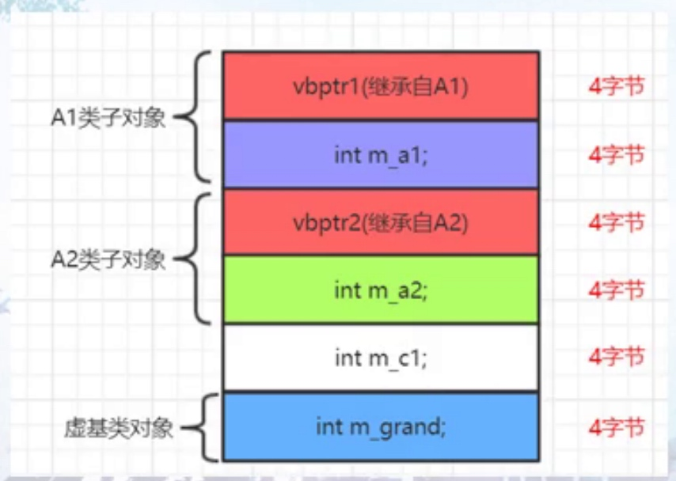

变量绑定
- 编译器对成员函数的解析，是在类定义完毕以后开始，对类成员变量的解析和绑定，是在类定义完成之后发生的，只有类定义完毕后，编译器才能看到类A中的成员变量
- ::引用全局的myvar的变量
成员函数
- 成员函数参数类型在编译器第一个遇到类型的时候绑定的
- 为了尽早的看到类型type，类型定义typedef一定要挪到类中的最早定义
进程内存空间布局
字节对齐
#pragma pack(1) 不对齐
#pragma pack() 取消不对齐，继续对齐
成员变量偏移值
静态成员变量存取
非静态成员变量
数据成员布局
- 成员边界填充
- 引入继承关系，会带来额外的内存空间的开销
- 对象中会产生虚函数表指针vptr
- 增加或者扩展构造函数，增加给虚函数表指针的vptr赋值的代码
- 多重继续，子类继续2个父类，如果子类还有自己的虚函数的话和第一个基类共用vptr
class Base {
public:
int m_bi;
char m_b;
char m_c;
char m_d;
};
sizeof(Base)=8字节，填充一个字节
class Base {
public:
int m_bi;
char m_b;
};
class Base2 : public Base {
public:
char m_c;
};
class Base3 : public Base2 {
public:
char m_d;
};

- 内存拷贝要谨慎Base2拷贝到Base3，会产生内存拷贝
单一继承父类不带虚函数的成员布局
 、
、
(gdb) p obj
$1 = (Base3) {
<Base> = {
m_bi = 1
},
members of Base3:
_vptr.Base3 = 0x400a80 <vtable for Base3+16>,
m_i = 2,
m_j = 3
}
(gdb) x/12x &obj
0x7fffffffdee0: 0x00400a80 0x00000000 0x00000001 0x00000002
0x7fffffffdef0: 0x00000003 0x00000000 0x00400740 0x00000000
0x7fffffffdf00: 0xffffdff0 0x00007fff 0x00000000 0x00000000
- 依靠偏移值不能绘制真正的数据布局
- vptr一直置顶
多重继承

- 访问Base1不用跳，访问Base2变量this指针要偏移
- 先继承就顶格
- this指针的调整都是编译器自动调整和偏移
(gdb) x/20d bs2
0x7fffffffdee0: 4197896 0 12 3
0x7fffffffdef0: 6 0 -8480 32767
0x7fffffffdf00: -8208 32767 0 0
0x7fffffffdf10: 0 0 -148827179 32767
0x7fffffffdf20: 0 32 -8200 32767
(gdb) x/20d &obj
0x7fffffffded0: 4197864 0 9 0
0x7fffffffdee0: 4197896 0 12 3
0x7fffffffdef0: 6 0 -8480 32767
0x7fffffffdf00: -8208 32767 0 0
0x7fffffffdf10: 0 0 -148827179 32767
Derived obj;
Base2* bs2 = &obj;
Base2* bs2 = (Base2*)(((char*)&obj) + sizeof(Base1))
Base1* bs1 = &obj;
bs1和bs2的地址并不相同
bs2指向的是bs2子对象的指针
虚基类中
- 传统多重继承，空间问题，效率问题，二义性
- 让grand只被继承一次，在孙子类中只有一份
虚基类
- 虚基类表
- 虚基类表指针
- 虚继承后，A1,A2会被插入一个虚基类表指针，C1会继承两个表指针

- 
- 虚基类表记录偏移来找到虚基类子对象
- 虚基类表指针成员变量的首地址 + 偏移量 = 虚基类对象首地址
观察各种继承
- 虚基类表的偏移值
- 虚基类表中的偏移量按照继承顺序来存放
- 虚基类子对象一直放在最下面
虚基类1-4字节分析
- 虚基类表指针成员变量的首地址，和本对象A1首地址的偏移量，也就是虚基类表指针 - A1的对象的首地址
- 只有对虚基类成员进行赋值的时候，才会用到虚基类
三层结构虚基类表内容分析

- 虚基类在编译的时候已经固定了
- vptr2基本没用到只用到vptr1
- 访问虚基类的成员变量要比普通成员变量慢
成员变量地址，偏移和指针
成员变量偏移值和偏移指针
- 和具体对象没有关系
- 成员变量指针保存的是一个偏移值，不是实际内存地址
- 没有指向任何数据成员的指针
int main() {
Obj obj;
obj.m_i = obj.m_j = obj.m_k = 0;
printf("mi = %p \n", &obj.m_i);
Obj* p = &obj;
printf("mi = %p \n", p->m_i);
printf("mj = %p \n", p->m_j);
int* p1 = &obj.m_i;
int* p2 = &obj.m_j;
*p1 = 15;
*p2 = 30;
printf("p1 = %p p1 val %d \n", p1, *p1);
printf("p2 = %p p2 val %d \n", p2, *p2);
printf("m_i offset %d \n", &Obj::m_i);
printf("m_j offset %d \n", &Obj::m_j);
printf("m_k offset %d \n", &Obj::m_k);
int Obj::*ptr = &Obj::m_i;
printf("m_k offset %d \n", ptr);
obj.*ptr = 13;
p->*ptr = 20;
ptr = nullptr; 编译器会把ptr设置为-1
ptr += 1//不允许
}